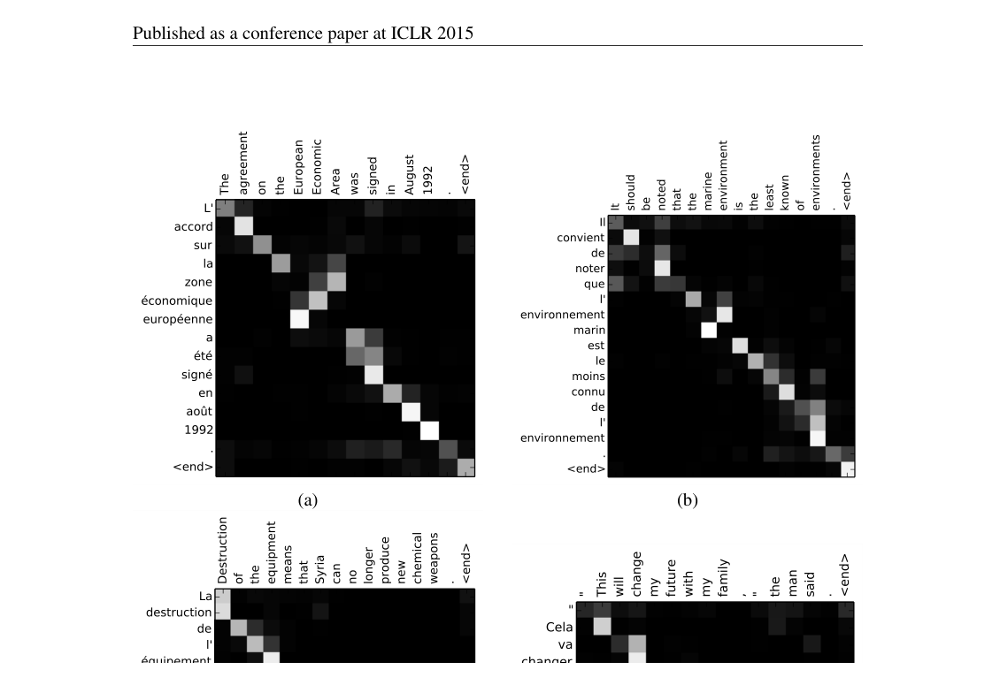

import torch
import torch.nn as nn
import torch.nn.functional as F
class Encoder(nn.Module):
def __init__(self, vocab_size, embed_dim, hidden_dim, num_layers=1, dropout=0.1):
super().__init__()
self.embedding = nn.Embedding(vocab_size, embed_dim)
self.rnn = nn.GRU(
embed_dim, hidden_dim,
num_layers=num_layers,
bidirectional=True, # 双向
batch_first=True,
dropout=dropout if num_layers > 1 else 0
)
# 将双向的隐藏状态压缩到单向维度
self.fc = nn.Linear(hidden_dim * 2, hidden_dim)
self.dropout = nn.Dropout(dropout)
def forward(self, src, src_lengths=None):
# src: [batch_size, src_len]
embedded = self.dropout(self.embedding(src)) # [batch, src_len, embed_dim]
if src_lengths is not None:
packed = nn.utils.rnn.pack_padded_sequence(
embedded, src_lengths.cpu(), batch_first=True, enforce_sorted=False
)
packed_outputs, hidden = self.rnn(packed)
outputs, _ = nn.utils.rnn.pad_packed_sequence(packed_outputs, batch_first=True)
else:
outputs, hidden = self.rnn(embedded)
# outputs: [batch, src_len, hidden_dim * 2] (双向拼接)
# hidden: [num_layers * 2, batch, hidden_dim]
# 合并前向和后向的最终隐藏状态
# hidden[-2] 是最后一层前向，hidden[-1] 是最后一层后向
hidden = torch.tanh(self.fc(torch.cat([hidden[-2], hidden[-1]], dim=1)))
# hidden: [batch, hidden_dim]
return outputs, hidden第5章：注意力机制的诞生
打破信息瓶颈：让解码器学会’回头看’
NLP
Attention
Seq2Seq
机器翻译
Bahdanau
Attention机制的诞生：Bahdanau如何让解码器学会’回头看’，打破Seq2Seq的信息瓶颈，以及注意力权重的可解释性。
核心问题：如何让解码器在生成每个词时，能够访问输入序列的不同部分，而不是只依赖一个压缩后的向量？
历史坐标：2014-2015 | Bahdanau, Cho, Bengio | 神经机器翻译的突破
1 从上一章说起
上一章我们见证了RNN的辉煌与困境。LSTM和GRU通过门控机制解决了梯度消失问题，Seq2Seq架构让神经网络能够处理翻译、摘要等序列到序列的任务。
但Seq2Seq有一个致命的设计缺陷：信息瓶颈。
回顾Seq2Seq的工作方式：编码器读取整个输入序列，将所有信息压缩到一个固定长度的上下文向量 \(\mathbf{c}\) 中；解码器仅凭这个向量，逐词生成输出。这意味着，无论输入是5个词还是50个词，所有信息都要塞进同一个维度的向量。
Sutskever等人(2014)的实验清楚地展示了这个问题：当输入句子超过20个词时，翻译质量急剧下降。更长的句子包含更多信息，而固定大小的向量无法承载。
让我们用一个具体的例子感受这个问题。考虑翻译任务：
英语：The agreement on the European Economic Area was signed in August 1992.
法语：L’accord sur la zone économique européenne a été signé en août 1992.
当解码器生成”août”（八月）时，它需要知道原文中的”August”。但在标准Seq2Seq中，“August”这个词首先被编码进隐藏状态，然后与其他所有词的信息混合在一起，最终压缩成上下文向量 \(\mathbf{c}\)。解码器要从这个压缩后的向量中”挖出”August的信息——这就像从一锅汤里找回原来的食材。
更糟糕的是，句子中的某些词对当前生成的词更重要。翻译”August”时，模型最需要关注的是原文中的”August”，而不是”The”或”was”。但标准Seq2Seq对所有输入位置一视同仁——它们都被同等地压缩进了 \(\mathbf{c}\)。
💡 本章核心洞察：解码器在生成每个词时，应该能够有选择地关注输入序列的不同位置。不同的输出词需要关注不同的输入词——这就是”注意力”的本质。Attention机制让解码器在每一步都能访问编码器的所有隐藏状态，并根据当前任务动态计算它们的重要性权重。
2 问题的本质是什么？
2.1 问题的精确定义
让我们形式化地描述Seq2Seq的信息瓶颈问题。
在标准Seq2Seq中，编码器产生一系列隐藏状态 \(\mathbf{h}_1^{enc}, \mathbf{h}_2^{enc}, \ldots, \mathbf{h}_T^{enc}\)，但只有最后一个状态 \(\mathbf{h}_T^{enc}\) 被传递给解码器作为上下文向量：
\[ \mathbf{c} = \mathbf{h}_T^{enc} \]
解码器的每一步都使用这同一个 \(\mathbf{c}\)：
\[ \mathbf{h}_t^{dec} = f(\mathbf{h}_{t-1}^{dec}, y_{t-1}, \mathbf{c}) \]
问题在于：\(\mathbf{c}\) 是一个静态的、全局的表示。它在解码的每一步都保持不变，无法根据当前生成的词动态调整。
从信息论的角度看，如果输入序列 \(\mathbf{x}\) 的信息熵是 \(H(\mathbf{x})\)，而 \(\mathbf{c}\) 的维度是 \(d\)，那么 \(\mathbf{c}\) 最多能携带 \(O(d)\) 的信息量。当 \(H(\mathbf{x}) > O(d)\) 时，信息丢失是不可避免的。
2.2 之前的尝试为何失败？
在Attention出现之前，研究者尝试过一些缓解信息瓶颈的方法：
增加上下文向量维度：直觉上，更大的 \(\mathbf{c}\) 可以携带更多信息。但这只是延缓问题，而非解决问题。而且更大的向量意味着更多参数，更容易过拟合。
使用双向RNN：让编码器同时从左到右和从右到左读取输入，然后拼接两个方向的最终隐藏状态。这确实能捕获更多上下文，但仍然是压缩到一个固定向量——只是这个向量稍微大了一点。
输入反转：Sutskever等人发现，将输入序列反转后再输入编码器，翻译效果更好。这是因为输入的最后几个词（反转后变成最先输入的词）与输出的最先几个词往往有更强的对应关系。但这只是一个启发式技巧，不能从根本上解决问题。
这些方法都没有触及问题的核心：解码器只能看到一个固定的、全局的表示，无法动态地访问输入的不同部分。
2.3 我们需要什么样的解决方案？
理想的解决方案应该具备以下特性：
- 动态性：解码器在生成不同词时，应该能够关注输入的不同位置
- 软选择：不是硬性地选择某一个位置，而是对所有位置计算一个重要性分布
- 端到端可训练：整个机制应该可以通过反向传播优化
- 可解释性：模型关注哪些位置应该是可以观察和理解的
这些特性正是Attention机制所提供的。
3 核心思想与直觉
3.1 关键洞察：动态的、基于内容的寻址
Attention的核心洞察可以用一句话概括：
让解码器在每一步都能”回头看”编码器的所有位置，并根据当前需要动态决定关注哪些位置。
这个想法听起来简单，但它彻底改变了序列到序列学习的范式。
3.2 直觉解释：聚光灯与图书馆
想象你在一个黑暗的图书馆里找书。传统Seq2Seq就像是：你先用手电筒快速扫过所有书架，然后关掉手电筒，仅凭记忆去取书。你对整个图书馆有一个模糊的整体印象，但细节很容易遗忘。
Attention机制则像是：你手里有一个可调节的聚光灯。当你需要找某本书时，你可以把聚光灯照向相关的书架，仔细查看那里的书名。不同的查询需求会让你把光照向不同的位置。
更具体地说，当解码器生成”août”（八月）这个词时，Attention机制会：
- 查看编码器的所有隐藏状态（图书馆的所有书架）
- 计算每个位置与当前任务的相关性（判断每个书架是否可能有你要的书）
- 把”聚光灯”主要照向相关的位置（“August”对应的编码器状态）
- 从这些位置汇总信息，辅助生成当前词
3.3 另一个类比：加权投票
你也可以把Attention理解为一种加权投票机制。
想象解码器是一个领导，需要做一个决定（生成下一个词）。它有一个顾问团队（编码器的各个隐藏状态），每个顾问掌握输入序列不同部分的信息。
传统Seq2Seq：只听一个”总顾问”的意见（上下文向量 \(\mathbf{c}\)），这个总顾问要综合所有人的信息。
Attention机制：直接征询每个顾问的意见，然后根据议题相关性给不同顾问的意见赋予不同权重，加权求和得出最终决定。
3.4 设计动机：为什么选择软注意力？
Attention机制有两种变体：
- 软注意力（Soft Attention）：对所有位置计算概率分布，加权求和
- 硬注意力（Hard Attention）：选择一个位置，只看那里的信息
Bahdanau等人选择了软注意力，原因是：
- 可微分：软注意力的加权求和是可微的，可以用标准的反向传播训练
- 稳定：硬注意力需要采样或强化学习方法训练，方差大，不稳定
- 信息更丰富：软注意力可以同时利用多个位置的信息，而不是非此即彼
硬注意力也有其优势（计算更高效，更稀疏），但在实践中，软注意力因其简单和有效成为了主流。
4 技术细节
4.1 Bahdanau Attention：加性注意力
2014年，Bahdanau、Cho和Bengio提出了第一个成功的注意力机制用于机器翻译。让我们详细看看它是如何工作的。
首先，编码器使用双向RNN，在每个位置 \(j\) 产生一个隐藏状态：
\[ \mathbf{h}_j = [\overrightarrow{\mathbf{h}}_j; \overleftarrow{\mathbf{h}}_j] \]
其中 \(\overrightarrow{\mathbf{h}}_j\) 是前向RNN的隐藏状态，\(\overleftarrow{\mathbf{h}}_j\) 是后向RNN的隐藏状态。拼接后，\(\mathbf{h}_j\) 同时包含了位置 \(j\) 的左侧和右侧上下文。
在解码的第 \(i\) 步，我们计算一个动态的上下文向量 \(\mathbf{c}_i\)（注意：不再是固定的 \(\mathbf{c}\)，而是每一步都不同的 \(\mathbf{c}_i\)）：
\[ \mathbf{c}_i = \sum_{j=1}^{T_x} \alpha_{ij} \mathbf{h}_j \]
其中 \(\alpha_{ij}\) 是第 \(i\) 步解码时，对输入位置 \(j\) 的注意力权重。
4.2 注意力权重的计算
那么 \(\alpha_{ij}\) 是怎么计算的呢？这是Attention机制的核心。
首先，计算一个对齐分数（alignment score） \(e_{ij}\)，衡量解码器当前状态与编码器位置 \(j\) 的相关性：
\[ e_{ij} = a(\mathbf{s}_{i-1}, \mathbf{h}_j) \]
其中 \(\mathbf{s}_{i-1}\) 是解码器在第 \(i-1\) 步的隐藏状态，\(a\) 是一个对齐模型（alignment model）。
Bahdanau使用了一个单层前馈网络作为对齐模型：
\[ e_{ij} = \mathbf{v}_a^\top \tanh(\mathbf{W}_a \mathbf{s}_{i-1} + \mathbf{U}_a \mathbf{h}_j) \]
这被称为加性注意力（additive attention），因为 \(\mathbf{s}_{i-1}\) 和 \(\mathbf{h}_j\) 是通过加法结合的。
然后，对所有位置的分数做softmax归一化，得到注意力权重：
\[ \alpha_{ij} = \frac{\exp(e_{ij})}{\sum_{k=1}^{T_x} \exp(e_{ik})} \]
softmax确保了：
- 所有权重都是正数：\(\alpha_{ij} > 0\)
- 权重之和为1：\(\sum_j \alpha_{ij} = 1\)
这样，\(\alpha_{ij}\) 可以解释为一个概率分布——解码器在第 \(i\) 步”关注”输入位置 \(j\) 的概率。
NoteAlgorithm: Bahdanau Attention (Bahdanau et al., 2015)
def bahdanau_attention(s_prev, encoder_outputs, W_a, U_a, v_a):
"""
Bahdanau (加性) 注意力机制
参数:
s_prev: 解码器上一步的隐藏状态 [batch, dec_hidden]
encoder_outputs: 编码器所有隐藏状态 [batch, src_len, enc_hidden]
W_a, U_a, v_a: 可学习参数
返回:
context: 上下文向量 [batch, enc_hidden]
attention_weights: 注意力权重 [batch, src_len]
"""
# Step 1: 计算对齐分数
# s_prev 广播到所有源位置
scores = v_a @ tanh(W_a @ s_prev + U_a @ encoder_outputs) # [batch, src_len]
# Step 2: Softmax 归一化
attention_weights = softmax(scores, dim=-1) # [batch, src_len]
# Step 3: 加权求和
context = attention_weights @ encoder_outputs # [batch, enc_hidden]
return context, attention_weightsSource: Bahdanau, Cho, & Bengio (2015) “Neural Machine Translation by Jointly Learning to Align and Translate”, ICLR 2015. arXiv:1409.0473
下图展示了带Bahdanau Attention的RNN Encoder-Decoder架构：

Source: Dive into Deep Learning, Figure 11.4.2. d2l.ai
4.3 完整数值示例：Attention计算
让我们用一个小例子走一遍完整的Attention计算过程。
设定：
- 输入序列：3个词（“I love NLP”），编码后得到3个隐藏状态
- 解码器隐藏状态维度：\(d_s = 4\)
- 编码器隐藏状态维度：\(d_h = 4\)
- 注意力中间维度：\(d_a = 3\)
编码器输出（假设已经计算好）：
\[ \mathbf{h}_1 = [0.2, 0.5, -0.3, 0.8]^\top \quad \text{("I")} \]
\[ \mathbf{h}_2 = [0.7, -0.2, 0.4, 0.1]^\top \quad \text{("love")} \]
\[ \mathbf{h}_3 = [-0.1, 0.6, 0.5, -0.4]^\top \quad \text{("NLP")} \]
解码器当前状态（正在生成第一个目标词）：
\[ \mathbf{s}_0 = [0.1, -0.3, 0.4, 0.2]^\top \]
参数（简化的随机值）：
\[ \mathbf{W}_a = \begin{bmatrix} 0.1 & -0.2 & 0.3 & 0.1 \\ 0.2 & 0.1 & -0.1 & 0.2 \\ -0.1 & 0.3 & 0.2 & -0.2 \end{bmatrix}, \quad \mathbf{U}_a = \begin{bmatrix} 0.2 & 0.1 & -0.2 & 0.3 \\ -0.1 & 0.2 & 0.1 & 0.1 \\ 0.3 & -0.1 & 0.2 & -0.1 \end{bmatrix} \]
\[ \mathbf{v}_a = [0.5, -0.3, 0.4]^\top \]
Step 1：计算 \(\mathbf{W}_a \mathbf{s}_0\)
\[ \mathbf{W}_a \mathbf{s}_0 = \begin{bmatrix} 0.1 \cdot 0.1 + (-0.2) \cdot (-0.3) + 0.3 \cdot 0.4 + 0.1 \cdot 0.2 \\ \vdots \end{bmatrix} = \begin{bmatrix} 0.21 \\ 0.03 \\ 0.04 \end{bmatrix} \]
Step 2：对每个编码器状态计算 \(\mathbf{U}_a \mathbf{h}_j\)
\[ \mathbf{U}_a \mathbf{h}_1 = [0.33, 0.14, -0.05]^\top \]
\[ \mathbf{U}_a \mathbf{h}_2 = [0.13, 0.06, 0.29]^\top \]
\[ \mathbf{U}_a \mathbf{h}_3 = [-0.15, 0.17, 0.05]^\top \]
Step 3：计算对齐分数 \(e_{1j}\)
\[ e_{11} = \mathbf{v}_a^\top \tanh(\mathbf{W}_a \mathbf{s}_0 + \mathbf{U}_a \mathbf{h}_1) = \mathbf{v}_a^\top \tanh([0.54, 0.17, -0.01]^\top) \]
\[ = [0.5, -0.3, 0.4] \cdot [\tanh(0.54), \tanh(0.17), \tanh(-0.01)]^\top \]
\[ = [0.5, -0.3, 0.4] \cdot [0.49, 0.17, -0.01]^\top = 0.24 - 0.05 - 0.004 \approx 0.19 \]
类似地计算 \(e_{12}\) 和 \(e_{13}\)：
\[ e_{12} \approx 0.25, \quad e_{13} \approx 0.08 \]
Step 4：Softmax归一化
\[ \alpha_{11} = \frac{\exp(0.19)}{\exp(0.19) + \exp(0.25) + \exp(0.08)} = \frac{1.21}{1.21 + 1.28 + 1.08} = \frac{1.21}{3.57} \approx 0.34 \]
\[ \alpha_{12} = \frac{1.28}{3.57} \approx 0.36, \quad \alpha_{13} = \frac{1.08}{3.57} \approx 0.30 \]
Step 5：计算上下文向量
\[ \mathbf{c}_1 = \alpha_{11} \mathbf{h}_1 + \alpha_{12} \mathbf{h}_2 + \alpha_{13} \mathbf{h}_3 \]
\[ = 0.34 \cdot [0.2, 0.5, -0.3, 0.8]^\top + 0.36 \cdot [0.7, -0.2, 0.4, 0.1]^\top + 0.30 \cdot [-0.1, 0.6, 0.5, -0.4]^\top \]
\[ \approx [0.29, 0.18, 0.09, 0.19]^\top \]
解读：在这个例子中，模型对”love”的关注最多（0.36），其次是”I”（0.34）和”NLP”（0.30）。注意力权重相对均匀，这可能是因为我们用的是随机参数。在训练后的真实模型中，权重分布会更加尖锐——模型会学会在需要时聚焦于特定位置。
4.4 解码器的完整流程
有了Attention机制，解码器的每一步工作流程变为：
- 计算注意力权重 \(\alpha_{ij}\)：基于当前解码器状态和所有编码器状态
- 计算上下文向量 \(\mathbf{c}_i\)：对编码器状态加权求和
- 更新解码器状态：结合上下文向量、前一步输出、前一步状态
\[ \mathbf{s}_i = f(\mathbf{s}_{i-1}, y_{i-1}, \mathbf{c}_i) \]
- 生成输出：基于新的解码器状态
\[ P(y_i | y_{<i}, \mathbf{x}) = g(\mathbf{s}_i, y_{i-1}, \mathbf{c}_i) \]
关键区别是：每一步都有一个不同的上下文向量 \(\mathbf{c}_i\)，它是根据当前任务动态计算的。
4.5 复杂度分析
时间复杂度：
- 计算所有对齐分数：\(O(T_x \cdot T_y \cdot d)\)
- 其中 \(T_x\) 是源序列长度，\(T_y\) 是目标序列长度，\(d\) 是隐藏维度
与标准Seq2Seq相比，Attention增加了 \(O(T_x \cdot T_y)\) 的计算量。对于长序列，这个开销是显著的。
空间复杂度：
- 需要存储所有编码器隐藏状态：\(O(T_x \cdot d)\)
- 标准Seq2Seq只需要存储最终状态：\(O(d)\)
这是用空间换取性能的典型例子。
5 注意力可视化：模型在”看”什么？
5.1 对齐矩阵
Attention机制的一个美妙特性是可解释性。注意力权重 \(\alpha_{ij}\) 直接告诉我们：在生成第 \(i\) 个目标词时，模型关注了哪些源词。
我们可以把所有的注意力权重排列成一个矩阵，横轴是源序列，纵轴是目标序列。这个矩阵被称为对齐矩阵（alignment matrix）。

Source: Bahdanau, Cho, & Bengio (2015) “Neural Machine Translation by Jointly Learning to Align and Translate”, Figure 3. arXiv:1409.0473
5.2 对齐模式的语言学意义
通过观察对齐矩阵，我们可以发现一些有趣的语言学模式：
1. 单调对齐
对于语序相似的语言对（如英语到德语的某些结构），对齐矩阵接近对角线——第1个源词对应第1个目标词，第2个对应第2个，依此类推。
2. 语序调整
当源语言和目标语言的词序不同时，对齐矩阵会偏离对角线。例如，英语的”red car”翻译成法语是”voiture rouge”（车 红），对齐矩阵会显示交叉模式。
3. 一对多和多对一
某些词没有直接对应，或一个词对应多个词。例如，英语的”going to”可能对应法语的单个词”va”。
4. 空对齐
某些目标词（如冠词）可能没有明确的源词对应，它们的注意力权重会分散在多个位置。
5.3 可视化的局限性
虽然注意力可视化很吸引人，但我们要谨慎解读：
- 注意力不等于解释：高注意力权重不一定意味着模型”理解”了那个位置的内容
- 可能有多重因素：模型可能通过其他机制（如位置信息）做出决定
- 训练目标的影响：注意力权重是为了最小化翻译损失而学习的，不一定反映人类的对齐直觉
后来的研究（如Jain & Wallace, 2019）对注意力的可解释性提出了质疑。但作为一个诊断工具，注意力可视化仍然非常有价值。
6 工程实践：带Attention的Seq2Seq
让我们用PyTorch实现一个带Attention的Seq2Seq模型。
6.1 编码器
6.2 Attention层
class BahdanauAttention(nn.Module):
def __init__(self, enc_hidden_dim, dec_hidden_dim, attention_dim):
super().__init__()
# 加性注意力的参数
self.W_a = nn.Linear(dec_hidden_dim, attention_dim, bias=False)
self.U_a = nn.Linear(enc_hidden_dim * 2, attention_dim, bias=False) # 双向编码器
self.v_a = nn.Linear(attention_dim, 1, bias=False)
def forward(self, decoder_hidden, encoder_outputs, mask=None):
"""
decoder_hidden: [batch, dec_hidden]
encoder_outputs: [batch, src_len, enc_hidden * 2]
mask: [batch, src_len], True表示需要mask的位置（padding）
"""
batch_size, src_len, _ = encoder_outputs.shape
# decoder_hidden 扩展到所有源位置
# [batch, dec_hidden] -> [batch, src_len, dec_hidden]
decoder_hidden = decoder_hidden.unsqueeze(1).repeat(1, src_len, 1)
# 计算对齐分数
# [batch, src_len, attention_dim]
energy = torch.tanh(self.W_a(decoder_hidden) + self.U_a(encoder_outputs))
# [batch, src_len, 1] -> [batch, src_len]
attention_scores = self.v_a(energy).squeeze(-1)
# 应用mask（将padding位置的分数设为很小的负数）
if mask is not None:
attention_scores = attention_scores.masked_fill(mask, -1e10)
# Softmax归一化
attention_weights = F.softmax(attention_scores, dim=1) # [batch, src_len]
# 计算上下文向量
# [batch, 1, src_len] @ [batch, src_len, enc_hidden*2] -> [batch, 1, enc_hidden*2]
context = torch.bmm(attention_weights.unsqueeze(1), encoder_outputs)
context = context.squeeze(1) # [batch, enc_hidden * 2]
return context, attention_weights6.3 解码器
class AttentionDecoder(nn.Module):
def __init__(self, vocab_size, embed_dim, enc_hidden_dim, dec_hidden_dim,
attention_dim, num_layers=1, dropout=0.1):
super().__init__()
self.vocab_size = vocab_size
self.attention = BahdanauAttention(enc_hidden_dim, dec_hidden_dim, attention_dim)
self.embedding = nn.Embedding(vocab_size, embed_dim)
# GRU输入是：embedded + context
self.rnn = nn.GRU(
embed_dim + enc_hidden_dim * 2, # 双向编码器
dec_hidden_dim,
num_layers=num_layers,
batch_first=True,
dropout=dropout if num_layers > 1 else 0
)
# 输出层
self.fc = nn.Linear(dec_hidden_dim + enc_hidden_dim * 2 + embed_dim, vocab_size)
self.dropout = nn.Dropout(dropout)
def forward(self, input_token, hidden, encoder_outputs, mask=None):
"""
单步解码
input_token: [batch] - 上一步的输出token
hidden: [1, batch, dec_hidden] - 上一步的隐藏状态
encoder_outputs: [batch, src_len, enc_hidden * 2]
"""
# Embedding
embedded = self.dropout(self.embedding(input_token)) # [batch, embed_dim]
# Attention
# hidden[-1] 取最后一层，[batch, dec_hidden]
context, attention_weights = self.attention(hidden[-1], encoder_outputs, mask)
# 拼接embedded和context作为RNN输入
rnn_input = torch.cat([embedded, context], dim=1).unsqueeze(1) # [batch, 1, embed+ctx]
# RNN
output, hidden = self.rnn(rnn_input, hidden)
output = output.squeeze(1) # [batch, dec_hidden]
# 输出层
prediction = self.fc(torch.cat([output, context, embedded], dim=1))
return prediction, hidden, attention_weights6.4 完整的Seq2Seq模型
class Seq2SeqAttention(nn.Module):
def __init__(self, encoder, decoder, device):
super().__init__()
self.encoder = encoder
self.decoder = decoder
self.device = device
def forward(self, src, trg, teacher_forcing_ratio=0.5):
"""
src: [batch, src_len]
trg: [batch, trg_len]
"""
batch_size = src.shape[0]
trg_len = trg.shape[1]
trg_vocab_size = self.decoder.vocab_size
# 存储输出
outputs = torch.zeros(batch_size, trg_len, trg_vocab_size).to(self.device)
attentions = []
# 编码
encoder_outputs, hidden = self.encoder(src)
# hidden: [batch, dec_hidden] -> [1, batch, dec_hidden]
hidden = hidden.unsqueeze(0)
# 第一个解码输入是 <sos> token
input_token = trg[:, 0]
for t in range(1, trg_len):
prediction, hidden, attention = self.decoder(
input_token, hidden, encoder_outputs
)
outputs[:, t] = prediction
attentions.append(attention)
# Teacher forcing
teacher_force = torch.rand(1).item() < teacher_forcing_ratio
top1 = prediction.argmax(1)
input_token = trg[:, t] if teacher_force else top1
return outputs, torch.stack(attentions, dim=1)
# 创建模型示例
device = torch.device('cuda' if torch.cuda.is_available() else 'cpu')
encoder = Encoder(vocab_size=10000, embed_dim=256, hidden_dim=512)
decoder = AttentionDecoder(
vocab_size=10000, embed_dim=256,
enc_hidden_dim=512, dec_hidden_dim=512, attention_dim=256
)
model = Seq2SeqAttention(encoder, decoder, device).to(device)
print(f"编码器参数: {sum(p.numel() for p in encoder.parameters()):,}")
print(f"解码器参数: {sum(p.numel() for p in decoder.parameters()):,}")
print(f"总参数: {sum(p.numel() for p in model.parameters()):,}")编码器参数: 5,450,240
解码器参数: 23,639,056
总参数: 29,089,2966.5 关键实现细节
1. Mask处理
在实际应用中，batch中的序列长度不同，需要padding。计算注意力时，padding位置不应该获得任何权重。我们通过mask将这些位置的分数设为很大的负数，softmax后它们的权重趋近于0。
2. Teacher Forcing
训练时，解码器的输入可以是真实的上一个词（teacher forcing）或模型预测的词。teacher_forcing_ratio 控制两者的混合比例。较高的比例加速训练，但可能导致exposure bias。
3. 双向编码器
我们使用双向GRU，编码器输出的维度是 hidden_dim * 2。这让每个位置都包含完整的上下文信息。
7 深入理解
7.1 为什么Attention有效？——理论视角
1. 信息论视角
标准Seq2Seq的上下文向量 \(\mathbf{c}\) 是输入 \(\mathbf{x}\) 的一个充分统计量（sufficient statistic）——如果 \(\mathbf{c}\) 完美，它应该包含关于 \(\mathbf{y}\) 的所有必要信息。但在实践中，有限维度的 \(\mathbf{c}\) 无法做到这一点。
Attention通过让解码器访问所有的 \(\mathbf{h}_j\)，实际上是在说：不要求一个充分统计量，而是让模型在需要时直接查询原始信息。这绕过了信息瓶颈。
2. 记忆寻址视角
可以把编码器的隐藏状态看作一个外部记忆（external memory），每个 \(\mathbf{h}_j\) 是一个记忆槽。Attention机制实现了基于内容的软寻址（content-based soft addressing）——根据当前查询（解码器状态）检索相关的记忆。
这个视角后来被显式化为Memory Networks和Neural Turing Machine。
3. 梯度流视角
从优化角度，Attention提供了一条从解码器到编码器特定位置的直接路径。在标准Seq2Seq中，梯度要从解码器流回编码器，必须经过 \(\mathbf{c}\)，再经过整个编码过程。Attention创造了”捷径”——梯度可以通过注意力权重直接传到相关的编码器位置。
7.2 边界条件与失效模式
1. 单调对齐假设
Bahdanau Attention隐含假设源和目标之间存在某种对齐关系。对于翻译任务这通常成立，但对于某些任务（如摘要），这个假设可能不成立——摘要可能需要整合分散在各处的信息，而不是”对齐”到特定位置。
2. 复杂度限制
当源序列很长时（如文档级翻译），计算所有位置的注意力权重变得昂贵。\(O(T_x \cdot T_y)\) 的复杂度在 \(T_x = 10000\) 时是不可接受的。
3. 分布偏移
训练时，解码器看到的上下文向量分布与推理时可能不同（因为teacher forcing）。这可能导致注意力权重在推理时不够准确。
7.3 开放研究问题
最优对齐：Attention学到的对齐与语言学家标注的对齐有什么关系？是否可以用语言学知识改进Attention？
稀疏注意力：能否学习更稀疏的注意力分布，只关注少数关键位置，而不是soft地分布到所有位置？
层次化注意力：对于长文档，能否设计层次化的Attention——先关注段落，再关注句子，最后关注词？
8 局限性与展望
8.1 本章方法的核心局限
1. 仍然依赖RNN
Bahdanau Attention是Seq2Seq的”补丁”——它增强了解码器访问信息的能力，但底层仍然是RNN。这意味着：
- 仍然是顺序计算，无法并行
- 仍然受限于RNN的长距离依赖问题（虽然因为Attention有所缓解）
2. 注意力计算与序列长度平方相关
每个解码步需要计算对所有编码位置的注意力，总复杂度是 \(O(T_x \cdot T_y)\)。对于长序列，这是显著的开销。
3. 没有位置感知
Attention是基于内容的，它不直接考虑位置信息。虽然双向RNN隐式编码了位置，但Attention本身对位置是”盲目”的。
8.2 这些局限指向什么？
Attention的成功引发了一个自然的问题：如果Attention如此强大，我们还需要RNN吗？
下一章将探讨Attention的各种变体，包括Luong提出的乘性注意力。更重要的是，这些探索最终导向了一个革命性的结论：我们可以完全用Attention取代RNN。
这就是第8章Transformer的核心思想——“Attention Is All You Need”。在那里，Self-Attention让序列中的每个位置都能直接与其他位置交互，完全抛弃了循环结构，实现了真正的并行计算。
从Bahdanau Attention到Transformer，Attention从一个”辅助机制”演变为”核心架构”。这是深度学习历史上最重要的范式转变之一。
9 本章小结
Important核心要点
- 问题：Seq2Seq的信息瓶颈——所有输入信息压缩到一个固定向量，导致长序列信息丢失
- 洞察：解码器应该能够动态地、有选择地关注输入的不同位置
- 方法：Attention机制计算解码器状态与每个编码器状态的相关性，生成注意力权重，加权求和得到动态上下文向量
- 意义：打破了固定向量的限制，大幅提升了长序列翻译质量，为后续的Transformer奠定了基础
9.1 关键公式速查
对齐分数（Bahdanau加性注意力）：
\[ e_{ij} = \mathbf{v}_a^\top \tanh(\mathbf{W}_a \mathbf{s}_{i-1} + \mathbf{U}_a \mathbf{h}_j) \]
注意力权重：
\[ \alpha_{ij} = \frac{\exp(e_{ij})}{\sum_{k=1}^{T_x} \exp(e_{ik})} \]
上下文向量：
\[ \mathbf{c}_i = \sum_{j=1}^{T_x} \alpha_{ij} \mathbf{h}_j \]
10 思考题
[概念理解] 为什么说Attention实现了”软寻址”？它与计算机内存的硬寻址有什么本质区别？这种软寻址的优势和劣势是什么？
[数学推导] 证明：当注意力权重集中在单一位置时（即 \(\alpha_{ij} \to 1\) 对某个 \(j\)，其他为0），上下文向量就退化为那个位置的编码器状态。这与硬注意力有什么关系？
[工程实践] 在实现Attention时，为什么要对padding位置应用mask？如果不做mask会有什么后果？如何正确实现mask（考虑数值稳定性）？
[批判思考] Attention的可视化经常被用来”解释”模型的决策。但这种解释是否可靠？设计一个实验来检验：注意力权重高的位置是否真的对模型输出有重要影响。
[开放问题] Bahdanau Attention需要为每个解码步计算对所有编码位置的注意力，复杂度是 \(O(T_x \cdot T_y)\)。有哪些方法可以降低这个复杂度？（提示：考虑稀疏化、局部化、或近似方法）
11 延伸阅读
11.1 核心论文（必读）
- [Bahdanau et al., 2015] Neural Machine Translation by Jointly Learning to Align and Translate
- Attention机制在NMT中的开创性工作
- 重点读：Section 3（模型架构）、Section 5（可视化分析）
- arXiv: 1409.0473
11.2 理论基础
- [Graves et al., 2014] Neural Turing Machines
- 提出了基于内容的软寻址，是Attention的理论先驱
- 重点读：Section 3.1（Attention机制）
11.3 后续发展
- [Luong et al., 2015] Effective Approaches to Attention-based Neural Machine Translation
- 提出乘性注意力，对比不同注意力变体
- 这是下一章的核心内容
- arXiv: 1508.04025
- [Vaswani et al., 2017] Attention Is All You Need
- Transformer：完全用Attention取代RNN
- 这是第8章的核心内容
- arXiv: 1706.03762
11.4 对Attention可解释性的讨论
- [Jain & Wallace, 2019] Attention is not Explanation
- 质疑Attention权重作为解释的可靠性
- arXiv: 1902.10186
- [Wiegreffe & Pinter, 2019] Attention is not not Explanation
- 对上述论文的回应，更细致地讨论Attention的解释性
- arXiv: 1908.04626
12 历史注脚
Attention机制的灵感部分来自人类视觉系统。当我们看一幅复杂的图像时，我们不会同时处理所有像素，而是会”聚焦”在感兴趣的区域。这种选择性注意（selective attention）是认知科学研究的经典课题。
Bahdanau在2014年将这个思想引入神经机器翻译时，并没有预料到它会成为深度学习最核心的组件之一。在论文中，他们谦虚地称之为”对齐模型”（alignment model），而不是”注意力”。“Attention”这个术语是后来被社区广泛采用的。
有趣的是，Bahdanau Attention的成功让研究者开始思考：如果Attention这么有效，我们是否需要RNN？两年后，Vaswani等人给出了答案——“Attention Is All You Need”。这篇论文不仅在技术上革新了序列建模，其标题本身也成为了深度学习历史上最具影响力的金句之一。